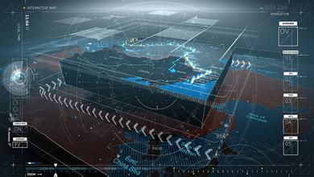
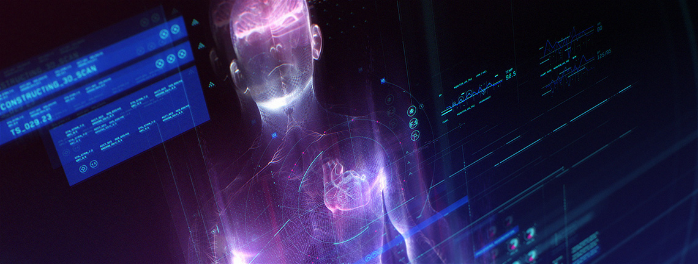
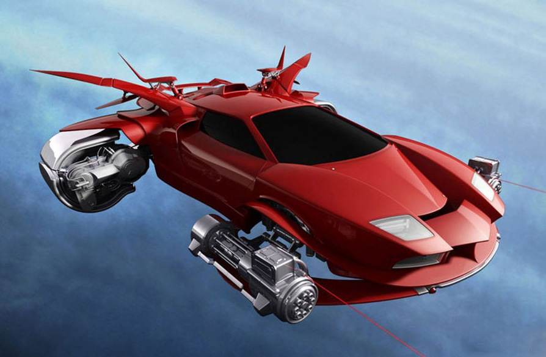
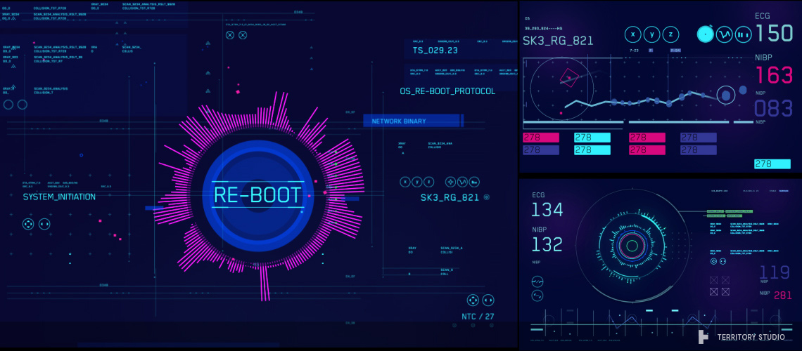
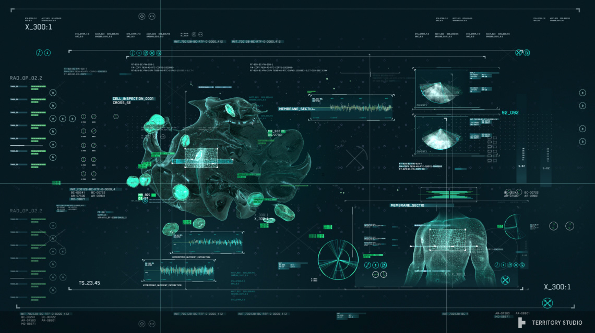
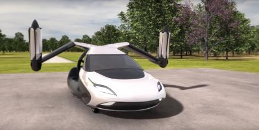
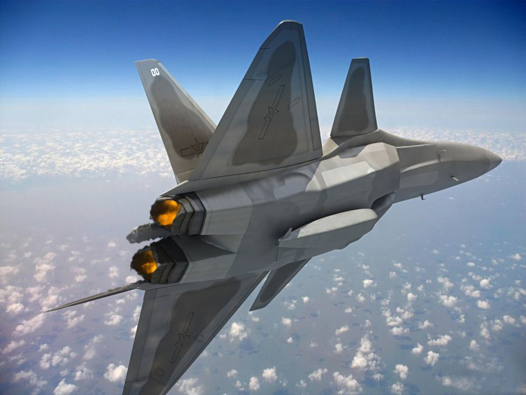
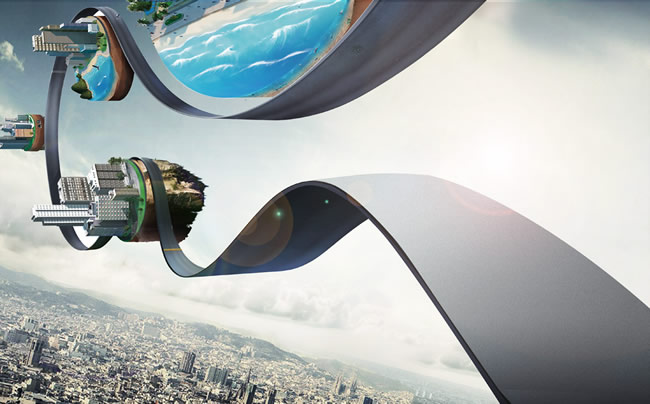
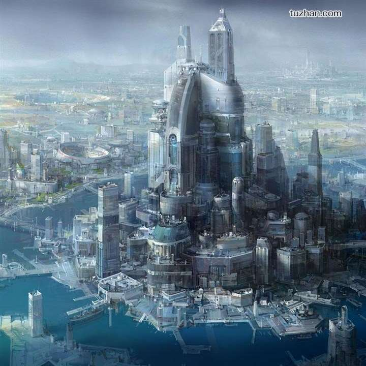
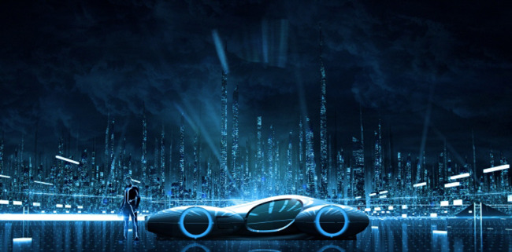

script
我的未来不是梦
My dream

最灵繁的人也看不见自己的背脊。
——非洲

有勇气承担命运这才是英雄好汉。
——黑塞

与肝胆人共事，无字句处读书。
——周恩来

最大的骄傲于最大的自卑都表示心灵的最软弱无力。
——斯宾诺莎

自知之明是最难得的知识。
——西班牙
勇气通往天堂，怯懦通往地狱。
——塞内加

越是无能的人，越喜欢挑剔别人的错儿。
——爱尔兰

意志坚强的人能把世界放在手中像泥块一样任意揉捏。
——歌德
最具挑战性的挑战莫过于提升自我。
——迈克尔·F·斯特利

、最大的挑战和突破在于用人，
而用人最大的突破在于信任人。
——马云

只有把抱怨环境的心情，
化为上进的力量，
。
——罗曼·罗兰
意志是一个强壮的盲人，
倚靠在明眼的跛子肩上。
——叔本华
卓越的人一大优点是：
在不利与艰难的遭遇里百折不饶。
——贝多芬

、我这个人走得很慢，
但是我从不后退。
——亚伯拉罕·林肯
Loading...